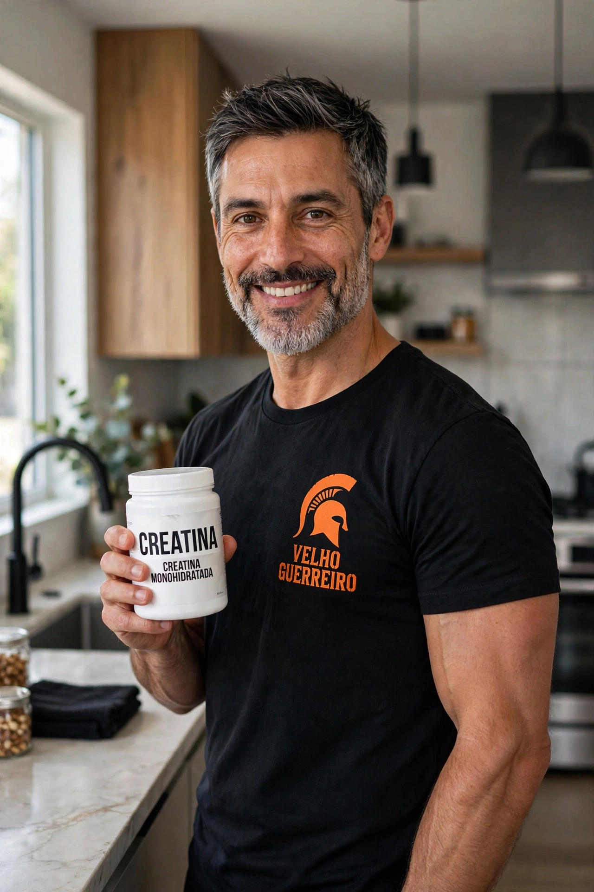

Creatina Após os 40: Dose, Benefícios e Como Tomar Com Segurança

Se você tem mais de 40 e ainda não toma creatina, está deixando força na mesa. Creatina é o suplemento mais estudado do mundo, com mais de 1.000 estudos, e é justamente depois dos 40 que ela faz mais diferença. Não é bomba, não é pré-treino, é energia pura para seu músculo.
Eu uso creatina monohidratada há 3 anos, todo dia, 5g. Ganhei 15% de força na barra fixa, parei de ter cãibra e minha recuperação entre séries caiu de 3 min para 90 segundos. Aos 40+, recuperação é tudo. Creatina te devolve isso.
1. O Que a Creatina Faz no Corpo Após os 40? 4 Benefícios Reais
Depois dos 40 perdemos 3% a 5% de massa muscular por década. Isso se chama sarcopenia. Creatina combate direto:
| Benefício | O que você sente na prática |
|---|---|
| 1. Mais força na barra | 1 a 2 repetições a mais em cada série. Agachamento e barra fixa sobem rápido. |
| 2. Recuperação mais rápida | Menos dor no dia seguinte, volta a treinar em 48h e não em 72h. |
| 3. Proteção cerebral e energia | Menos fadiga mental à tarde, foco melhor. Cérebro também usa creatina. |
| 4. Ajuda na hidratação muscular | Músculo fica mais cheio e protegido, menos cãibra e câimbra noturna. |
Estudos com homens de 48 a 72 anos mostram ganho de 2kg de massa magra em 12 semanas só adicionando creatina + treino de força. Sem mudar dieta.
2. Creatina Faz Mal Para Rim? A Verdade Para Homem 40+
Essa é a maior mentira. Creatina monohidratada pura NÃO faz mal para rim saudável. O que faz mal é: rim já doente + sem beber água + dose absurda de 20g por dia por meses.
Em 2023, a Sociedade Internacional de Nutrição Esportiva revisou 25 anos de dados e concluiu: creatina 3g a 5g por dia é segura para adultos saudáveis, inclusive 40+, 50+ e 60+, desde que beba água.
Quando NÃO tomar sem falar com médico: se você já tem insuficiência renal diagnosticada, pedra no rim recorrente ou toma remédio nefrotóxico contínuo. Fora isso, homem saudável 40+ pode usar com tranquilidade. Eu faço exame de creatinina 1x ao ano e está sempre normal.
3. Como Tomar Creatina Após os 40: Protocolo Velho Guerreiro
Qual tipo comprar?
Compre sempre Creatina Monohidratada Pura 100% Creapure ou com selo de pureza. Sem sabor, sem mistura com BCAA, sem efervescente. O resto é marketing e encarece. Pote de 300g dura 60 dias.
Dose certa 40+ (sem saturação maluca)
- Semana 1 a 4 (opcional): 5g todo dia, mesmo sem treinar. Pode tomar em jejum? Pode. Eu tomo de manhã com água.
- Manutenção: 5g todo dia para quem pesa 75kg a 90kg. Se pesa menos de 70kg, 3g a 4g já resolve. Se pesa mais de 95kg, 6g.
- Esqueça saturação de 20g por dia: isso é protocolo antigo para atleta jovem. Para 40+ só incha barriga e dá diarreia.
Como tomar para absorver melhor?
Tome com 300ml de água, junto com alguma refeição com carboidrato. Ex: após almoço ou com iogurte e banana. Carboidrato ajuda insulina levar creatina para músculo. Não precisa misturar com whey, mas pode. Evite tomar com café muito forte na mesma hora, atrapalha absorção.
Hidratação obrigatória 40+
Creatina puxa água para dentro do músculo. Se não beber água, dá dor de cabeça e cãibra. Protocolo: 35ml de água por kg de peso. Homem de 80kg = 2,8 litros por dia. Eu deixo garrafa de 1L na mesa e bebo 3 por dia. Simples.
4. Creatina + Whey + Treino de Barra: Combinação Perfeita 40+
Meu protocolo diário que funciona há 3 anos:
- Manhã: 5g creatina + 300ml água + café da manhã com 3 ovos
- Treino 17h: Barra fixa 4x8, flexão pés elevados 3x12, agachamento búlgaro 3x12
- Pós-treino: 30g whey + banana + 500ml água
Creatina te dá energia para fazer 2 reps a mais. Whey te dá proteína para construir músculo. Treino de força te dá estímulo. Um sem o outro não funciona. É tripé do guerreiro 40+.
5. Quanto Tempo Para Sentir Efeito?
Não é pré-treino que sente na hora. Creatina é estoque.
- 7 dias: Músculo mais cheio, menos cãibra noturna.
- 14 a 21 dias: 1 a 2 repetições a mais, recuperação melhor entre séries.
- 45 a 60 dias: Ganho de força visível, 1kg a 2kg de massa magra se treino estiver ok.
Se parar de tomar, estoque cai em 3 a 4 semanas e você perde o benefício. Por isso tem que ser todo dia, até no dia sem treino. É como escovar dente, hábito diário.
Conclusão: Depois dos 40, Creatina Não É Luxo, É Base
Eu já gastei dinheiro com BCAA, termogênico, pré-treino importado. Tudo jogado fora. O que ficou foi o básico que funciona: creatina monohidratada 5g todo dia, whey quando falta proteína e treino de força com barra fixa.
Se você quer ganhar força sem lesão, recuperar mais rápido e manter músculo depois dos 40, comece hoje. Compre monohidratada pura, beba 3 litros de água e tome 5g todo dia por 60 dias. Depois me conta na barra.
Força, disciplina e evolução.
— Velho Guerreiro